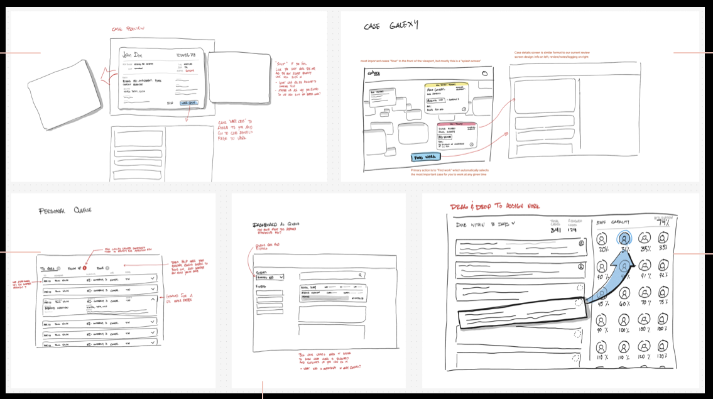
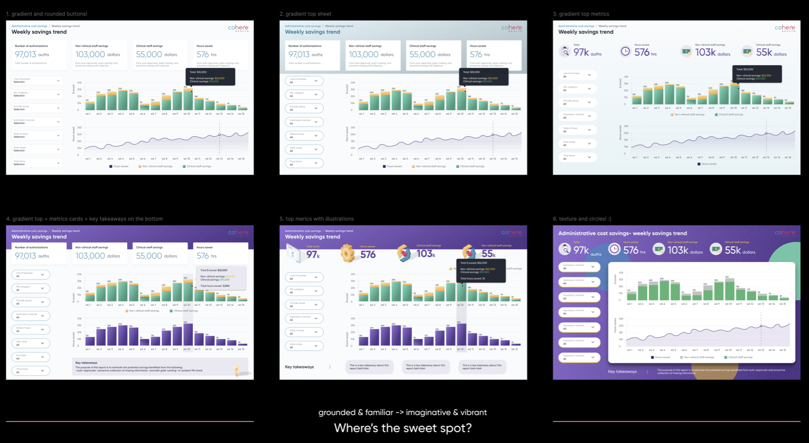

A native workforce management tool that replaced a $1,600-per-seat Salesforce instance for Cohere Health's ops team, processing 6,000+ prior-authorization submissions a day. It scaled from one queue to 15+ across the company and saved $320k a year.
How might we create a native, less manual queue management experience for intake specialists so they can process faxes more efficiently?
1. Everything Salesforce does, but better
Intake specialists didn't always know which case to prioritize, causing missed turnaround times. Supervisors spent nearly 75% of their time manually assigning cases instead of coaching their teams.

Four directions explored before converging: a case preview card, an auto-assigned personal queue, a capacity dashboard, and "case galaxy," a deliberate push-the-limit idea that ended up shaping the final design more than any of the safer options.

Intake specialist view: one unmissable action to start the next case, efficiency metrics up top.

Supervisor view: real-time queue and team metrics, with red "Unassigned" chips flagging where attention is needed.
2. Scale from 1 to 2, then to many
Fax intake alone drove a 45% increase in cases worked per hour. Expanding to clinical review meant designing for a different definition of "good work": intake specialists optimize for speed and follow strict rules; clinical reviewers optimize for accuracy and use clinical judgment case by case.

Clinical review queue: same underlying system, tuned for a different kind of work.
To get past designing for just two personas, I built a configuration tool that let the team stand up new queues without custom engineering, which is what let Queue Management expand to 15+ queues company-wide.
3. Building Cohere's first in-app reporting product: visual exploration
Because Salesforce lived outside our product, ops leaders had no real-time visibility into volume or performance. I broke the work down by user story, then explored six visual directions for the data, from grounded and familiar to imaginative and vibrant, before finding the sweet spot.

Style exploration: six directions for the same data, from grounded and familiar to imaginative and vibrant.

Final design: real-time visibility, rebuilt natively where Salesforce couldn't reach.
Impact
Takeaways
Scale through configuration, not customization: building the config tool early meant the system could grow to 15+ queues without engineering rebuilding it each time. And breaking ambiguous 0 → 1 work (like a first-ever data viz product) into concrete user stories made it tractable and gave stakeholders something real to react to early.